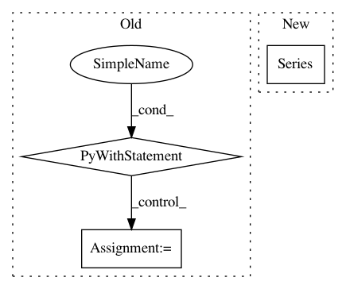

8d8d007fa2ffdf2a7f8f0a5ea596db84f942339e,lore/encoders.py,Token,transform,#Token#Any#,523
Before Change
:param data: DataFrame with column to encode
:return: encoded Series
with timer("transform %s:" % self.name, logging.DEBUG):
results = {}
for column, values in self.tokenize(data).iteritems():
result = values.map(self.map, na_action="ignore")
result[result == 0] = self.tail_value
result[result.isnull()] = self.missing_value
results[column] = result.astype(self.dtype)
return pandas.Series(pandas.DataFrame(results).values.tolist())
def reverse_transform(self, series):
with timer("reverse_transform token %s:" % self.name, logging.DEBUG):
data = pandas.DataFrame(series.tolist())
for column in data:
After Change
:return: encoded Series
transformed = super(Token, self).transform(self.tokenize(data))
return pandas.Series(transformed.values.reshape((len(data), self.sequence_length)).tolist())
def reverse_transform(self, series):
with timer("reverse_transform token %s:" % self.name, logging.DEBUG):
data = pandas.DataFrame(series.tolist())
In pattern: SUPERPATTERN
Frequency: 3
Non-data size: 3
Instances
Project Name: instacart/lore
Commit Name: 8d8d007fa2ffdf2a7f8f0a5ea596db84f942339e
Time: 2017-12-12
Author: montanalow@users.noreply.github.com
File Name: lore/encoders.py
Class Name: Token
Method Name: transform
Project Name: okfn-brasil/serenata-de-amor
Commit Name: 3c626088a7174c28d1b1a093143c4ca7b2b154fc
Time: 2016-11-25
Author: iirineu@gmail.com
File Name: src/fetch_yelp_info.py
Class Name:
Method Name:
Project Name: pandas-dev/pandas
Commit Name: 13a97c235dc6e131bd54f1ba91f4ac4cb32b0421
Time: 2021-03-02
Author: jbrockmendel@gmail.com
File Name: pandas/tests/indexing/test_categorical.py
Class Name: TestCategoricalIndex
Method Name: test_loc_scalar